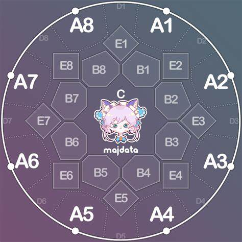
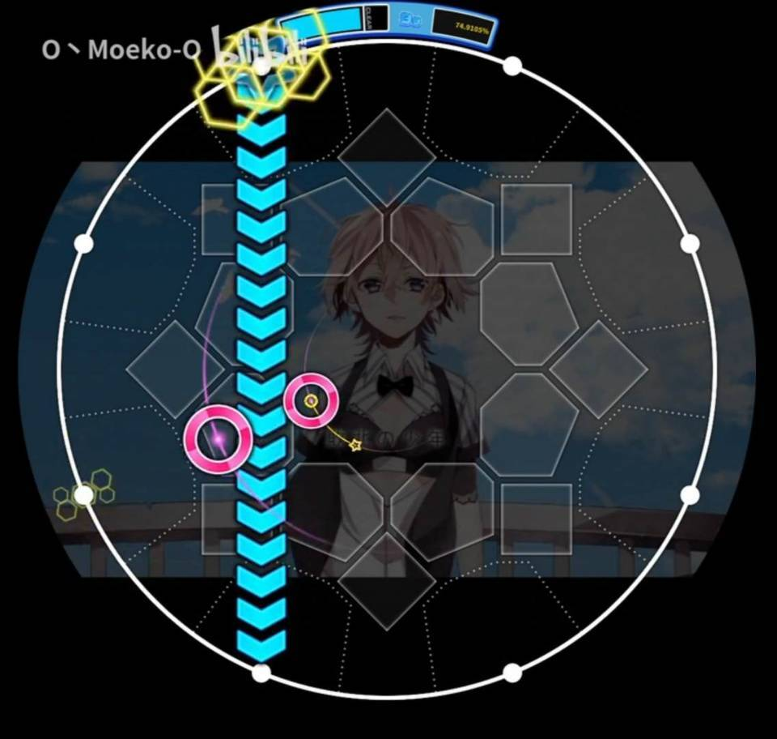
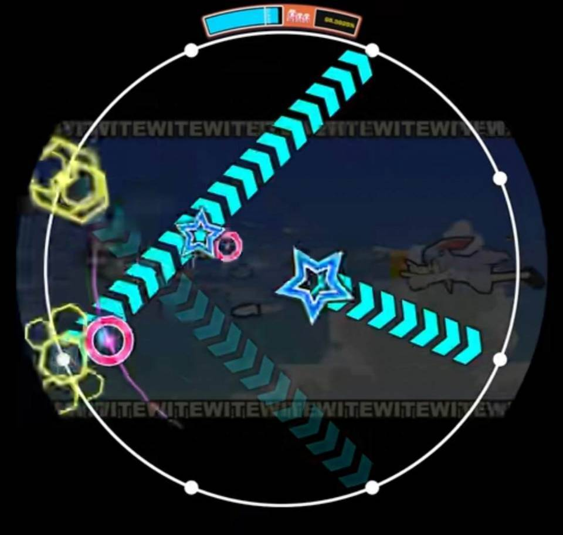
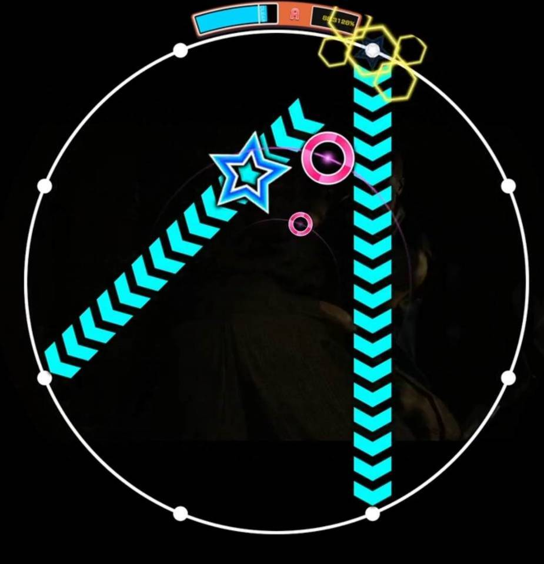
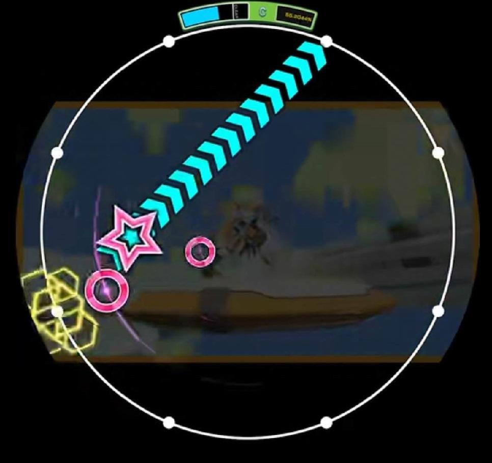
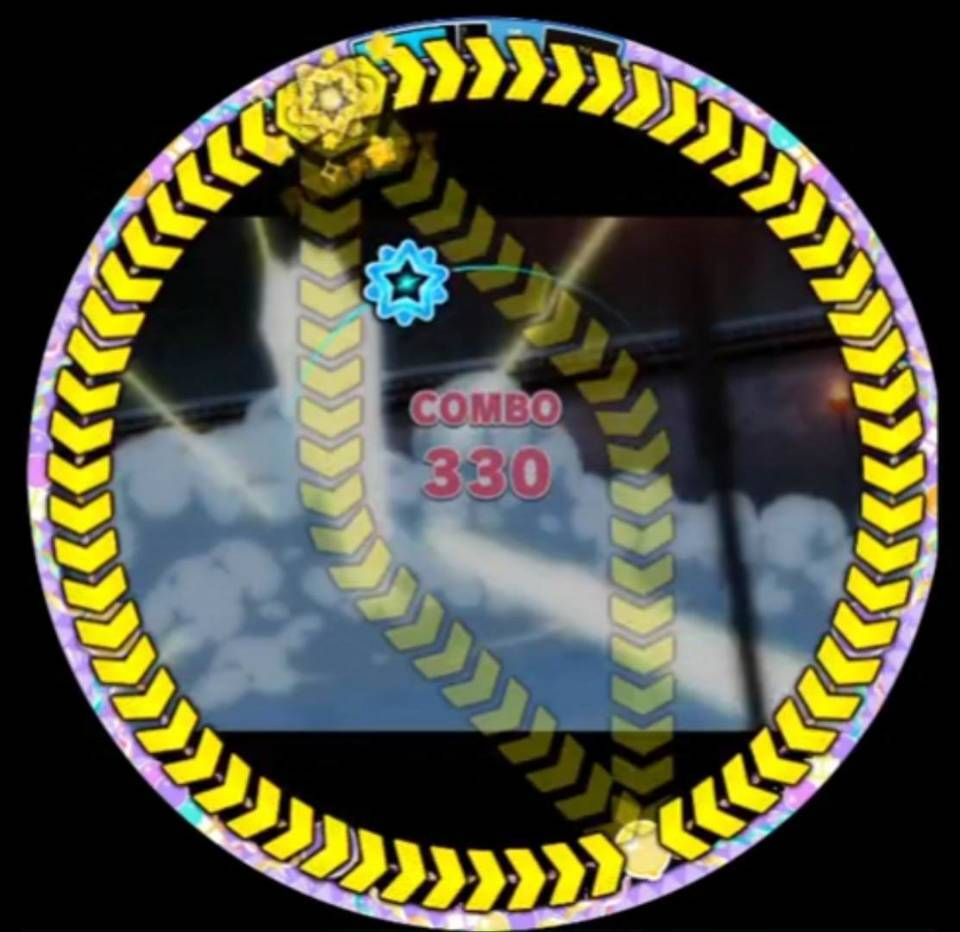
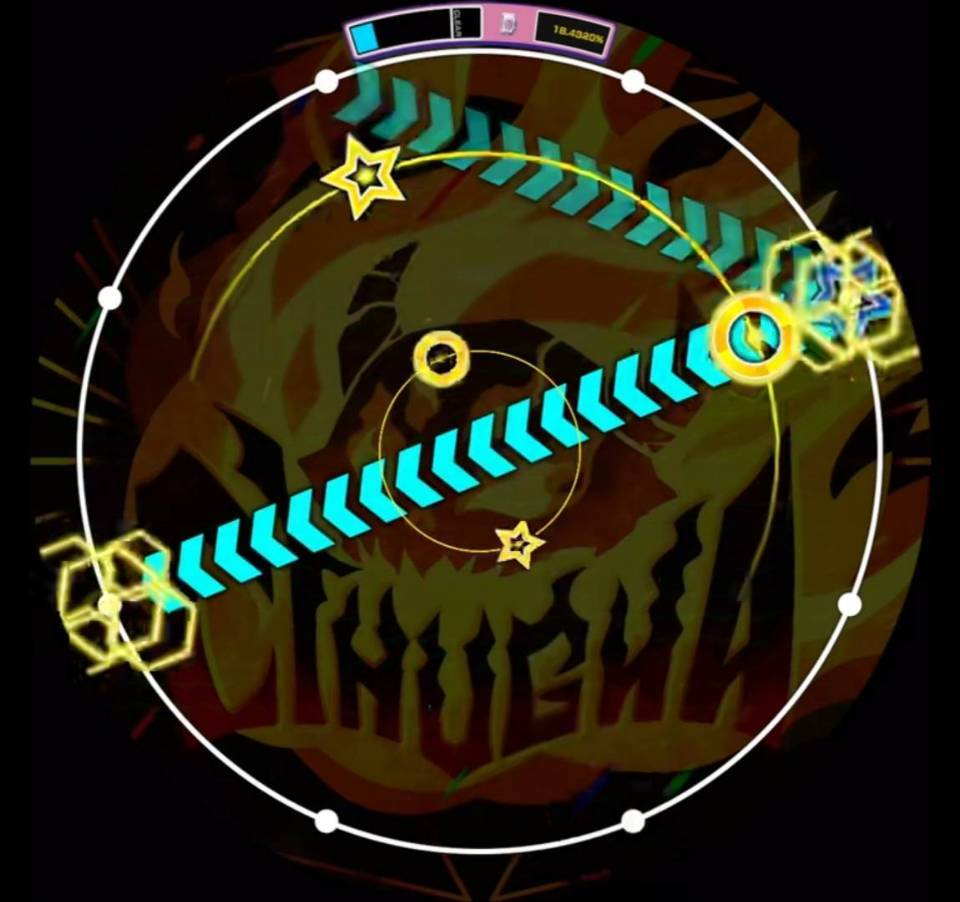
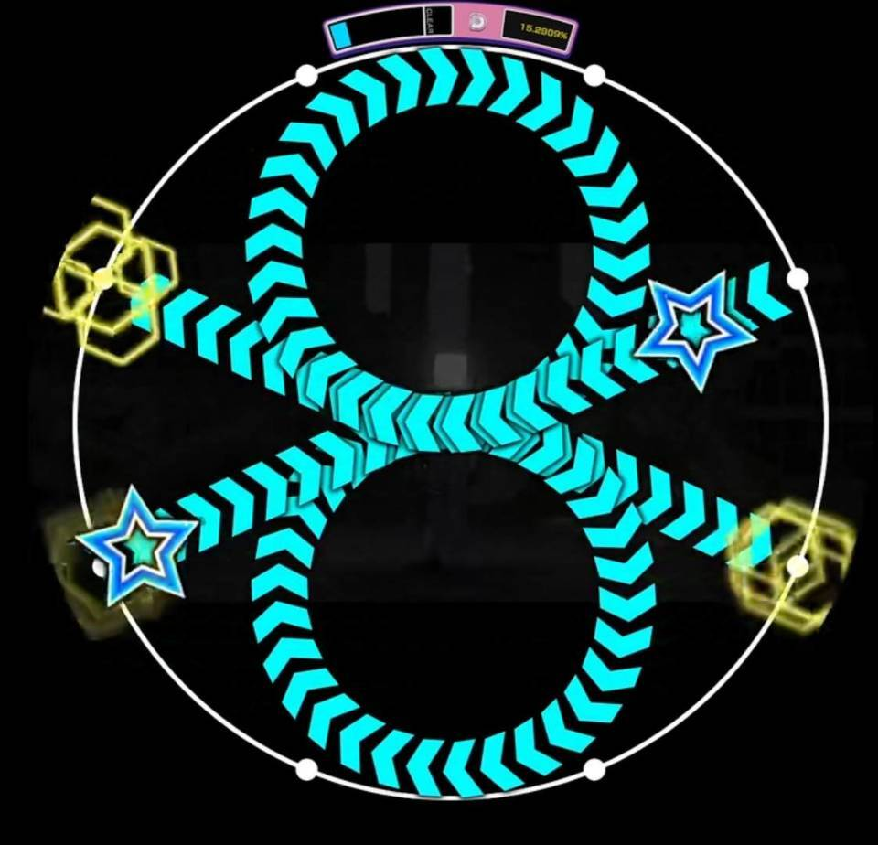
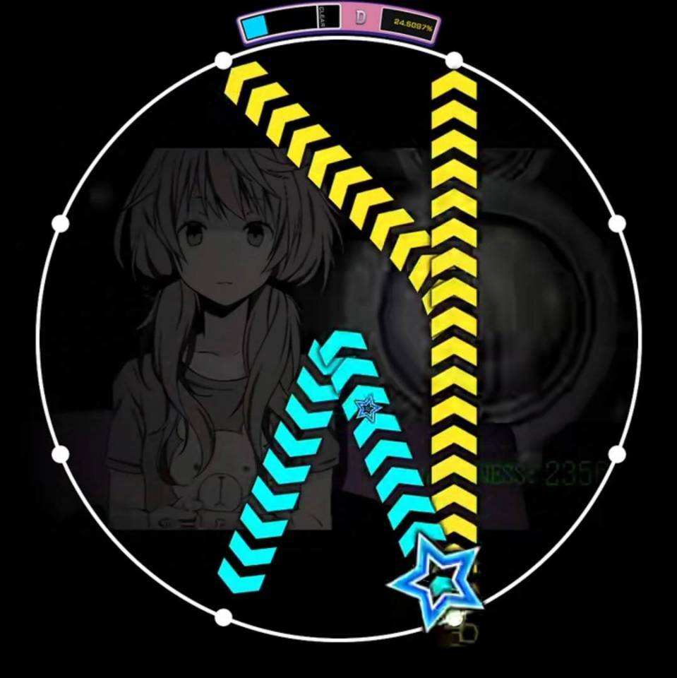

在此之前的预备知识
首先为了方便描述，我们需要先了解判定区长什么样子：

对于星星描述的语言（本文使用 simai 語），由于文中都会指出会经过哪些判定区，因此阅读本文不需要相应的预备知识，但如果真的感兴趣，你可以参考这里（但我也不太熟用错了别打我w）
下面进入正文
考虑 1^4 的弧线星星需要经过的判定区：1a 2a 3a 4a，那么需要完成的任务队列为：1a[on], 1a[off], 2a[on], 2a[off], 3a[on], 3a[off], 4a[on]，其中 [on] 表示判定区感应到接触，感应的是屏幕被触控的状态而非摸下去这个动作。[off] 表示判定区的感应消失的事件，感应的是手抬起来这个动作而非屏幕上没有手的状态。
每当一个 slide track 出现，队列前三个任务可被完成，任务完成后将清空自身及之前的任务，留下更短的队列，当最后一个任务完成时 slide track 被判定完毕。
由此可以解释一些常见（？）现象：
- A 区免判：即划星星可以直接从星星头对应的下一个区域开始划。例如 1^4，从 2a 开始划先触发的是 2a[on] 任务，刚好是队列中第三个任务，完成该任务将直接清除任务队列中的 1a[on], 1a[off], 2a[on]. 假如点一下 2a 并松手的话，任务队列将仅剩下 3a[on], 3a[off], 4a[on]. 此时可直接点一下 4a 即可判定整条星星。
- 跳区：为 A 区免判的更广义的形式，即划星星可以直接从星星残留部分的第一个区域对应的下一个区域开始划。以 1^6 的星星为例，如果点一下 2a 并松开，此时任务队列中还有 3a[on], 3a[off], 4a[on], 4a[off], 5a[on], 5a[off], 6a[on]，屏幕上会残留 3^6 的星星，这时再点一下 4a 并松开，此时任务队列中还有 5a[on], 5a[off], 6a[on]，屏幕上会残留 5^6 的星星，再点一下 6a 则 slide track 结束。回顾整个过程，1a, 3a, 5a 区域没有被触碰，而是触碰 2a, 4a, 6a 即可消去 1^2, 3^4, 5^6 的长度为 2 的星星片段，每次完成的都是任务队列中第三个任务，因而可以被判定。
- 松手判定：以 1^4 为例，如果 2a 没有松开，点击 4a 将不会判定整条星星，这是因为 2a[off] 未触发，此时 4a[on] 为任务队列的第四个任务，无法被直接完成。
特殊情况：当星星的长度为三格时，如 1^3, 1-3, 1V35，2a/2b/4b[on] 将不可跳过，统一到队列理论中则为：
- 1^3: 1a[on], 1a[off], 2a[on], 2a[on], 2a[off], 3a[on].
- 1-3: 1a[on], 1a[off], 2a/2b[on], 2a/2b[on], 2a/2b[off], 3a[on].
- 1V35: 1a[on], 1a[off], 2a/2b[on], 2a/2b[on], 2a/2b[off], 3a[on], 4a/4b[on], 4a/4b[on], 4a/4b[off], 5a[on].
代入任务队列理论，划完 1^3 的星星可以依次点击 1a, 2a, 3a 或者 2a, 3a. 由于有两个 2a[on]，因而 2a 区域不可跳区，出现跳区保护现象。与此相对，1^4 的星星则可以通过点击 2a, 4a 来跳过 3a 区域，3a 区域未被保护。
我懂了，然后呢
那么为此可以总结一些防蹭注意点/星星处理细节（√）
星星蹭 tap
- 8-5 防蹭 6a tap. 例如「敗北の少年」定拍星星段，由于 8-5 的直线星星中经过 7b, 6b 区域，照着划很容易大手摸到 6a，解决方法是用指尖尽量不要碰到 6a 和 7a。或者极端情况可以弯一点，从 8a 划到 c 7b 6b 的交界处再划到 5a 一定不会蹭（但可能会没拐过来导致 5a 留尾）
- 还有一些很蹭的星星阵，如「ウサテイ」也需要注意该种防蹭。
|  |  |
|---|---|
| 敗北の少年 MASTER Lv13 | ウサテイ MASTER Lv14 |
- 星星的第一个判定区持续有 tap 单点。
- 如「鼓動」结尾一手点 1a tap 一手划星星 1-4 和 1-6。建议从 b2/b8 开始划星星，防止蹭到 1a 的 tap.
- 如 「FREEDOM DiVE (tpz Overcute Remix) 」的 6-1 应当等 6 号位的 tap 全部结束再启动。
|  |  |
|---|---|
| 鼓動 MASTER Lv13 | FREEDOM DiVE MASTER Lv14 |
星星蹭星星
外蹭内。例如「SD 月に叢雲華に風」中的 8>4 防蹭 8p4，前者判定区为 8a 1a 2a 3a 4a 后者判定区为 8a 1b 2b 3b 4a。由于星星很快时可能手会不注意贴框，导致摸 2a 的同时摸到了 2b，那结尾摸 4a 时候就会把第二根判掉。
第一根星星的路径上有/或极其靠近第二根星星的尾巴（更特别是第二根是长度为 3 的短星星时），由于第一根星星一定会摸到第二根星星的尾巴，所以一定不要摸到第二根的第二个判定区。
|  |  |
|---|---|
| SD 月に叢雲華に風 MASTER Lv13 | Cthuga MASTER Lv14 |
- 一笔画星星留尾。1>5 可以通过 2a, 4a 跳过 3a，但如果一笔画 3a 有个星星尾就得注意不能跳 3a.
其他省力/省脑小手法
1p4 的星星，经过区域为 1a 1b 2b 3b 4b 5b 6b 7b 8b 1b 2b 3b 4a，可以看到 b 区要绕一大圈，所以很容易脑梗/划不全，此时可以在 b 区和 c 区左右搓几下，其中注意不要碰到 4a（因为不碰尾巴的 a 区星星就绝对不可能被判定掉）就可以只剩一个 4a 的尾巴。在两个 p 形双押星星出现时可以有效防止脑梗。
- 例如 Destr0yer 这里可以直接上下搓 b 区和 c 区防止脑梗
4V5 的星星，经过区域为 4a 4b c 5b 5a，可以利用跳区只接触 4b 5b 5a，从尖尖的大幅度的 V 形变成小摸一下就能解决的厂字形。
|  |  |
|---|---|
| SD Destr0yer MASTER Lv14 | 幸せになれる隠しコマンドがあるらしい MASTER Lv14 |
- 如果想提前处理慢星星到只剩一个尾巴再最后解决，此时可以保留尾巴长度为 2 的星星段，防止刻意追求余留长度为 1 而导致不小心摸到 a 区。
TL;DR
- 触碰星星尾部的 a 区是星星判定的必要条件，若余留长度为 2 则也可以判（总长度为 3 的星星除外），因此触碰 a 区时请务必小心。
- 对于星星蹭 tap，注意防蹭哪些 a 区；对于星星蹭星星，注意划第一根时经过的路径如果不小心大手划歪向外/向内是否会蹭/跳区蹭第二根星星，通过空间防蹭（避开某些判定区）和时间防蹭（蹭掉第二根时刚好处在第二根的判定时间范围内）注意/提前设计手法。